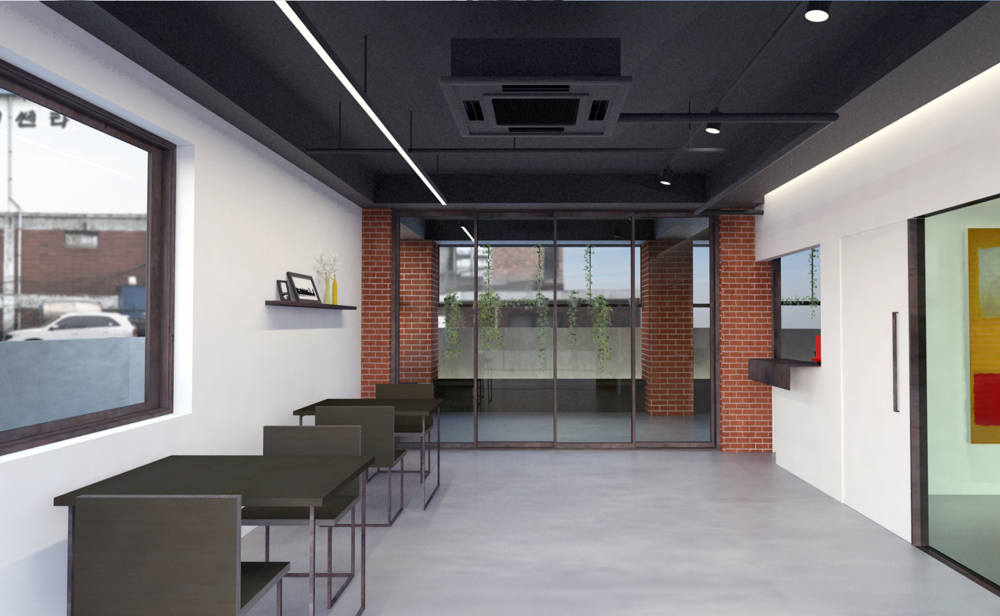
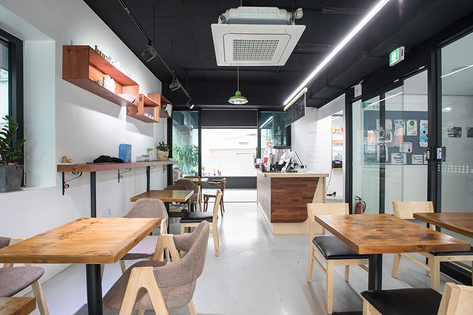
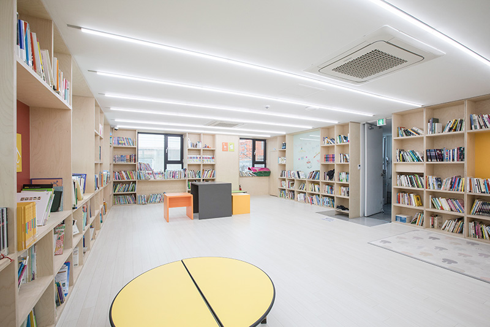

This is a renovation project of old culture center. The culture center has five stories and one basement floor. Prior to renovation, the building had mixed functions such as dance practice rooms, offices, and warehouses.

The café on the ground floor, which connects the back yard and terrace with the city's streets, shows a new possibility of functioning as a public space in the city.

Performances such as short drama, gala show of opera, chamber concerts, seminars are regularly held. This work shows the potential that hybrid space of cafe and small theatre can vitalize a small community.
